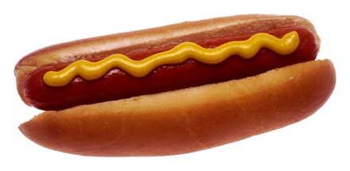

Hotdogs

Ingredients
- Hotdog buns
- Hotdog weiner sausages
- Alternatively, other sausage types will work.
- Condiments
Steps
- Cook sausage on a hot grill, in a frying pan, or boiling in water.
- Prepare bun by making a cut lengthwise the bun, and 3/4 with depth.
- Place the cooked sausage in the bun.
- Garnish with condiments as desired.